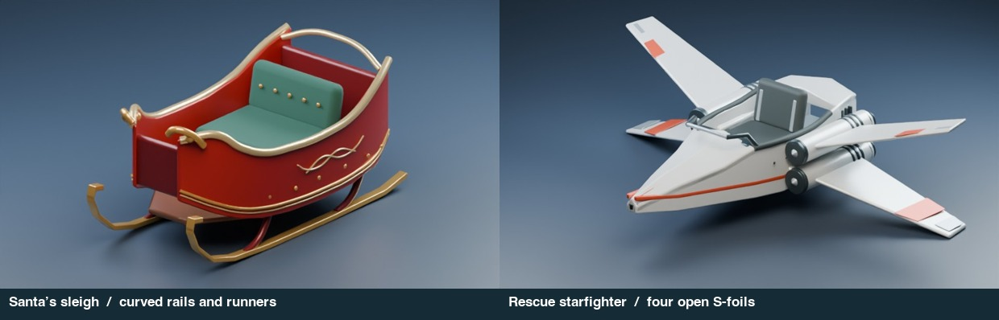
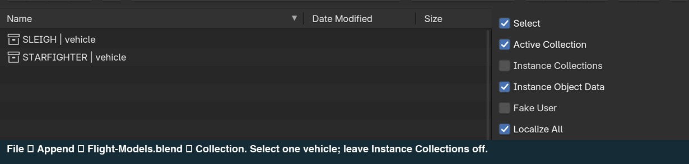
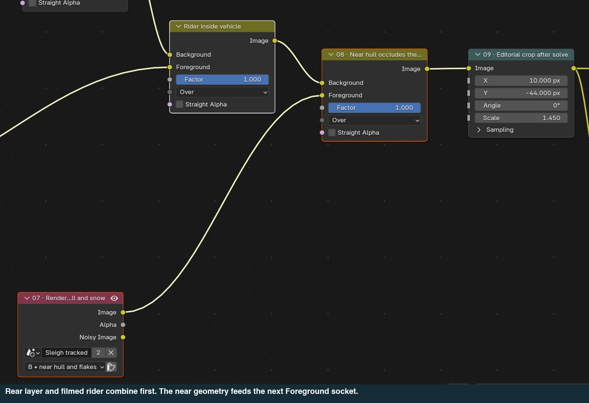
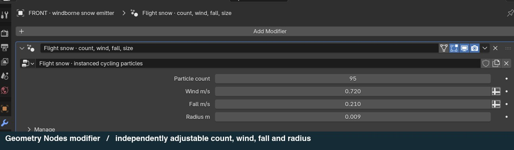
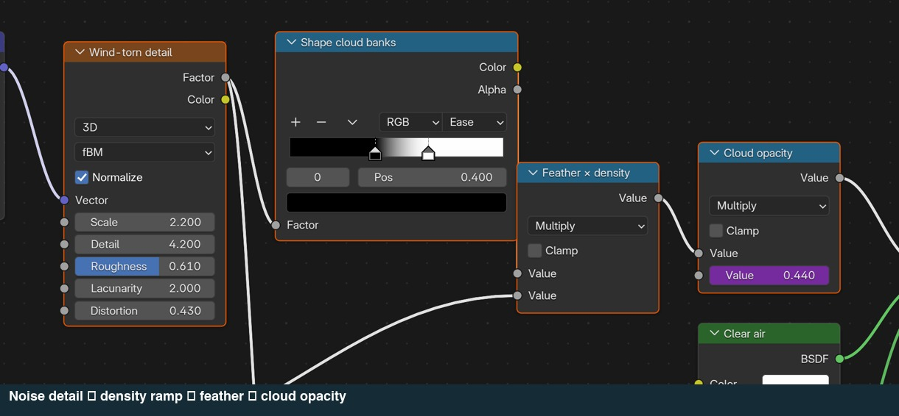
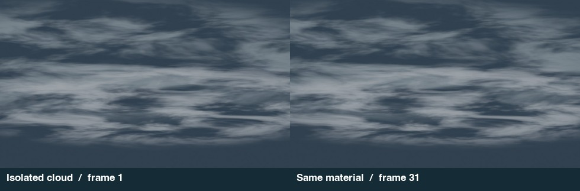

First solve the shot using stationary room features as in steps 1–4. The camera records your walk around the chair. The aircraft’s forward travel is a second movement you choose when you stage the flight.
Bring in the supplied aircraft. In Object Mode use File → Import → Wavefront (.obj) and choose X-Fighter.obj. On import, enable splitting by groups if you want a separate object for the hull, each wing and the windows. Orbit around the nose until you can identify the canopy. The original mesh has UV coordinates that match the six XWing DDS maps in the Maps folder. If the import appears grey, reconnect the Diffuse map to Base Color first. Use the Normal map through a Normal Map node and set its image to Non-Color so lighting follows the panel detail.
Find the seat before moving the ship. In a working copy, hide the window group temporarily so you can see into the cockpit. Place a common parent for the six parts with its pivot at the seat. In Camera View, fit that pivot to the tracked box where the pilot sits. Adjust the parent’s scale and heading while checking a side view, a three-quarter view and a front view. Fit the filmed pilot against the seat back. In this shot the first pass made the pilot look small. Increasing the cutout and its matte together to 168% about an upper-body reference made the shoulders fill the seat. Leave clearance above the hair, then check that the dashboard still hides the lap when the camera moves in front. Restore the windows. Look for the pilot’s eyes below the canopy roof and the lap inside the hull in all three views. For the opening wide shot in this preview the virtual camera starts farther back and eases onto the measured camera path. The pilot image and its matte scale together about the optical centre through that move.
Put the canopy in front of the pilot. The far wall of the cockpit goes behind the isolated footage. The nearer sill and canopy frames cover the rider where they cross him. Keep a faint reflection on the glass so you can still see his face through it. Scrub the orbit: if the entire head covers a crossing frame, check which layer is in front. If the seat slices through the torso, remove the seat from the foreground mask.
Give the flight a direction. Keep the solved camera’s movement relative to the cockpit. Give the camera and aircraft the same forward travel over a fixed landscape, or move the landscape the opposite way in their shared coordinate system. Place a ridge and a cloud bank at different distances, with more distant mountains behind both. Watch the approach, orbit and exit. A near slope should cross the view faster than a distant peak. The landscape should keep moving even after the pilot leaves the frame.
The original OBJ in Blender. Follow the fuselage back from the nose to find the canopy.The window selection. Keeping the panes separate lets you balance reflection and visibility.
The preview uses the Video Copilot Star Pack model, Chad’s classroom footage, elevation and aerial imagery from USGS The National Map in the Teton Range, and the Sunflowers Pure Sky panorama from Poly Haven.
Practise on the three-second excerpt
Allow three 70-minute classes. Use Tracking-Start.blend for tracking, Tracking-Solved.blend for the seat check, Flight-Models.blend and Flight-Atmosphere.blend for the assets. Compare your result to either finished project. Keep room-track.mp4 beside all of the Blender files.
Class 1 covers steps 1–4. Class 2 covers steps 5–7. Class 3 covers steps 8–10. The sleigh and cockpit blocking study use the excerpt from 0:04 to 0:07. For the full X-Fighter shot, use the Star Pack model from your class folder.
A marker follows a small patch of pixels through a shot. Several stationary patches at different depths let Blender estimate where the phone was for each frame. Watch a nearby tripod foot slide relative to a far doorframe. That difference is parallax.
EXPLAIN ITI would track ___ because ___ stays fixed relative to the room.
IN SHORTA marker follows a small patch of pixels through a shot. Several stationary patches at different depths let Blender estimate where the phone was for each frame. Watch a nearby tripod foot slide relative to a far doorframe. That difference is parallax.
READ ALOUD
TODAYTrack fixed details, recover the moving camera and judge the result against the actual plate.
File Extract Tracked-Flight-Files.zip completely. Open Tracking-Start.blend at the top of the extracted folder. In the full offline workshop, find this inner ZIP in assets or use the download on the lesson home. File → Save As a practice copy in the same folder. Focus The full-width room-track.mp4. The rider-only crop from the first workshop leaves out most of the useful fixed room. Route Movie Clip Editor → Tracking mode → Clip view. Hover over the clip and press Home to fit.
Set the current frame to 1. The practice clip contains 90 frames at 30 fps. Play or scrub to frame 90, then back to 1. Observe how the room moves around the performer.
Find a distinctive corner in the background, a fixed feature in the middle distance and one on the floor. Pick intersections you can recognize again. Reflections, a moving hand and the rippling green cloth make poor landmarks.
Predict which pair changes its apparent separation more: two corners on the back wall, or a far door corner and the foot of a nearby stand. Check by scrubbing. Explain which tells you more about depth.
STEP CHECKLIST
GLOSSARY
Parallax: Near and far features shift relative to one another when the camera changes position.
Feature: A small, distinctive patch the tracker can recognize.
Three candidates on the photographed set. A hard room corner and a planted stand can be measured; the actor can turn independently.
WHYIf every track lies on one wall, the wall can fit while the camera’s inferred depth near the seat is wrong.
CHECKYou can point to at least three fixed details at different distances and reject a moving detail with a reason.
FIXIf all you see is the cropped chest and face, switch the clip selector to room-track.mp4.
WORKED EXAMPLE · DIFFERENT OBJECTFilming a parked bike, choose a brick corner and a bolt on the rack. A cyclist riding behind the bike would give the solver a second, unrelated motion.
STRETCH (AFTER THE CHECK PASSES)Choose another plausible-looking feature that might move during this particular shot.
02
Track one corner by hand
The small pattern box describes what Blender should recognize. The larger search region describes where Blender may look for it in the next frame. Success means the crosshair stays on the same physical corner.
EXPLAIN ITThe marker is reliable through frame ___ because ___.
IN SHORTThe small pattern box describes what Blender should recognize. The larger search region describes where Blender may look for it in the next frame. Success means the crosshair stays on the same physical corner.
READ ALOUD
TODAYTrack fixed details, recover the moving camera and judge the result against the actual plate.
File Your practice copy at frame 1. Focus One distinct door-frame corner. Route Clip Editor → left toolbar (T) → Track. Ctrl + left-click in the image adds a marker in the default keymap.
For an uncluttered practice view, switch the largest editor to Movie Clip Editor, set its clip to room-track.mp4, and use Track → Add Marker or Ctrl + left-click to add your own marker. In the personal practice copy only, you can select the preset tracks (A) and delete them first. Zoom over the top-left of the door trim. Put your pattern across its two intersecting edges.
Keep this one track selected. Press Alt + Right Arrow a few times to track one frame at a time. Watch the centre of the crosshair, not just the bounding box.
Press Ctrl + T to track forward. Scrub backwards to inspect frames 15, 30 and 60. If a mark starts sliding, go to its last accurate frame. Use the forward Clear button in the Track toolbar (hover for its tooltip), correct the marker, and track forward again. If the feature leaves the image, stop using that track there.
Repeat on a different fixed patch. Compare the reliability of a sharp corner with a single long edge. Save your copy.
STEP CHECKLIST
GLOSSARY
Pattern: The small patch used for recognition.
Search region: The area searched for the pattern on the next frame.
Drift: A marker gradually leaves its intended detail.
Blender’s Track toolbar on the actual wide clip. Locate Add, Pattern Size and Search Size. The inset enlarges the door detail used for the practice track.
WHYThe tracker can follow a straight edge along its length accidentally. A corner constrains both horizontal and vertical movement.
CHECKYour practice marker still sits on the same door corner several frames later. You can find its last reliable frame if the track stops.
FIXIf Ctrl + T changes another editor, move the pointer over the movie. If the marker jumps to a repeated tile, reduce the ambiguity by choosing an irregular intersection.
WORKED EXAMPLE · DIFFERENT OBJECTOn a book cover use a letter corner, rather than the middle of a long printed line.
STRETCH (AFTER THE CHECK PASSES)Track the same landmark with two pattern sizes and decide which holds longer.
03
Solve the camera motion
A solve finds 3D points and camera poses that reproduce your 2D measurements. The reprojection error describes their disagreement in pixels. Inspecting the actual slide of a fixed object is a second, different test.
EXPLAIN ITMy average error was ___ px. I also checked ___.
IN SHORTA solve finds 3D points and camera poses that reproduce your 2D measurements. The reprojection error describes their disagreement in pixels. Inspecting the actual slide of a fixed object is a second, different test.
READ ALOUD
TODAYTrack fixed details, recover the moving camera and judge the result against the actual plate.
File Keep your manual practice. Use a new working copy of the supplied checkpoint for the full set of real room measurements. Focus The Camera tracking object; two different views with shared tracks and parallax. Route Movie Clip Editor → Tracking → T → Solve → Solve Camera Motion.
For a from-scratch solve, spread tracks around the room and at different depths. At least eight good tracks must overlap on both chosen keyframes; aim for more so you can reject a drifting track. Track from both directions as necessary.
For the reproducible route, reopen Tracking-Start.blend. Save another copy beside it. It contains 170 prepared feature tracks measured on the actual movie, with no saved solve. Select several tracks and scrub; the markers must stay on fixed room details. Your manual track from the previous exercise remains in its own file.
In the right sidebar (N) choose Track → Objects → Camera. Open the left toolbar (T), then Solve. Leave automatic Keyframe selection off so you can set the pair. The worked solve uses A = 1 and B = 84, Tripod Motion off, Refine Focal Length on, centre and distortion held fixed. Leave its starting lens settings in place. Click Solve Camera Motion. The calibrated image must be 960 × 540. Wait for the error readout.
Read the solve error beside the reference below. If an individual track follows a new object, mute or remove that track in your copy and solve again. Compare both the error and the alignment near the seat before accepting it.
STEP CHECKLIST
GLOSSARY
Reprojection error: Distance between a measured feature and its estimated 3D point projected back into the image.
Bundle: A reconstructed 3D feature position.
The native Blender reconstruction for the practice plate. Use the Solve tab and compare the reported error with the chair alignment in the next step.
WHYA low average only describes the features used by the solver. A chair-area test can reveal an error the average hides.
CHECKYou can report the error with its pixel units, identify the frames used and explain why a low number alone cannot certify the vehicle placement.
FIX“At least 8 common tracks” means the selected frames do not share enough valid features. Use another overlapping pair with a real change in viewpoint or repair tracks across both.
WORKED EXAMPLE · DIFFERENT OBJECTA poster may line up perfectly on a wall even though a model placed a metre in front slides. Test something near the performance.
STRETCH (AFTER THE CHECK PASSES)Exclude one suspect track, re-solve your copy and compare the seat check before keeping the change.
04
Plant a test box before adding the vehicle
A solved camera has motion but no inherent floor, seat or real-world unit. Use stationary references to orient the set. A plain box at the chair is a cheaper placement test than debugging a finished vehicle.
EXPLAIN ITAt frames ___, ___ and ___ the test corner sits ___.
IN SHORTA solved camera has motion but no inherent floor, seat or real-world unit. Use stationary references to orient the set. A plain box at the chair is a cheaper placement test than debugging a finished vehicle.
READ ALOUD
TODAYTrack fixed details, recover the moving camera and judge the result against the actual plate.
File Tracking-Solved.blend, saved as a new working copy. Keep the solved camera active. Focus The chair-area anchor and reference box, viewed through the camera. Route Movie Clip Editor → Solve → Orientation. 3D Viewport → View → Cameras → Active Camera.
When building from scratch, use Setup Tracking Scene from the tracking editor to create the camera setup. The supplied checkpoint already has Flight Camera, a baked, seat-aligned copy of this reconstruction. Open the 3D Viewport and use camera view to inspect it. A new solve does not update the baked example camera. Use Setup Tracking Scene in your separate from-scratch file to evaluate your own solve.
For a fresh orientation, select three solved points on the same physical floor and use Floor. Select a suitable solved point and choose Set Origin. Select two solved points that define a known horizontal line and choose Set X Axis or Set Y Axis. If a real measured distance is available, select its two points, enter Distance and use Set Scale. A guessed dimension provides working scale only.
Choose the Seat inspection workspace in Tracking-Solved.blend. Use camera view (Numpad 0 if you are outside it). Select Seat check | tracked wire box in the Outliner and inspect frames 1, 45 and 90. The front edges correspond to the real green box. Seat contact | place vehicle here is the placement Empty. The three paint chips belong to a separate tracking object and were withheld from the camera solve.
In a practice copy, move the test box a little in depth. Compare first and last frames. Undo and save the version that stays planted. Decide whether the solve is good enough for a rim touching the performer.
STEP CHECKLIST
GLOSSARY
Orientation: Which direction is up and which plane is the floor in the reconstruction.
Working scale: A usable relative size when a physical set measurement is unavailable.
The box/seat check against the real footage at three different times. Follow the same physical corner across the series.
WHYA stationary chair insert must share the camera movement across time. Keyframing its 2D position by eye could hide a depth error on a single frame.
CHECKThe chair insert holds over the interval used for the final example. You have compared at least three frames and can report any slide.
FIXIf the box is aligned only at the middle frame, investigate its depth, an incorrect focal length, or drifting tracks before increasing its size.
WORKED EXAMPLE · DIFFERENT OBJECTAnchor a virtual lamp to a real table before adding its shade. A lamp base is easier to check than the whole light.
STRETCH (AFTER THE CHECK PASSES)Which part of the shot would you need to track again to extend the move another two seconds?
05
Append a real 3D vehicle
A collection groups the hull, near rim and details so you can place one vehicle without breaking its construction. The asset origin marks where the performer sits. You can inspect the mesh from any side.
EXPLAIN ITI moved the ___ because it controls ___.
IN SHORTA collection groups the hull, near rim and details so you can place one vehicle without breaking its construction. The asset origin marks where the performer sits. You can inspect the mesh from any side.
READ ALOUD
TODAYBring in one original vehicle, place its seat in the class shot and establish what must be in front of the performer.
File Your solved copy and Flight-Models.blend in the same folder. Focus Select one entire vehicle collection. Route File → Append → Flight-Models.blend → Collection.
First open Flight-Models.blend as a reference. Use the top-right view-layer selector to choose Starfighter only if you want that reference. Orbit the vehicle in the 3D Viewport. Find the seat, near rail and a detail that projects out from the hull. Reopen your saved tracking copy.
Choose File → Append. Open Flight-Models.blend → Collection, then SLEIGH | vehicle or STARFIGHTER | vehicle. Append a single collection with Instance Collections off so you can separate the near and far meshes later.
In the Outliner expand that collection and select its supplied Empty named SLEIGH · seat pivot or STARFIGHTER · seat pivot. The meshes are children of that handle. You can now place the whole model while keeping individual meshes editable.
Try R, Z and a small rotation with the seat pivot selected, then undo. All mesh parts should turn around the same seat together. If nothing moves except an empty, check that you selected the supplied pivot. Save before placing it.
Practise editing a real model part
For the sleigh, select FRONT · polished cap rail. Frame Selected, Tab into Edit Mode, select a Bézier control point near the bow and move it with G, Z. Watch the smooth curve follow it. Undo. For the fighter, inspect FRONT · open S-foil upper in vertex selection. Move a tip in a practice copy, then inspect from front and top. Save the fit before experimenting.
STEP CHECKLIST
GLOSSARY
Append: Copy data from another .blend into the current project.
Instance: A placed reference to a collection.
Pivot: The point around which the model rotates.

Original 3D vehicle assets from the workshop. Compare the open seat with the parts that should appear in front of the rider.

The two collections in Blender’s actual file picker. Instance Collections is off for the editable-mesh route.
WHYMoving individual mesh parts leaves bolts and trim behind. A collection handle lets you adjust the whole vehicle around the performance.
CHECKYou can orbit and see thickness, an open seat and a different silhouette from the side. Moving the handle moves the entire vehicle once.
FIXIf you imported a single non-editable instance, undo and append the collection with Instance Collections off. If the vehicle appears twice, check for a duplicate import before changing materials.
WORKED EXAMPLE · DIFFERENT OBJECTMove a model bicycle by its assembly handle. Dragging only the frame leaves the wheels in the old place.
STRETCH (AFTER THE CHECK PASSES)Inspect the second design and identify which part can conceal a hard edge of the actor plate.
06
Fit the seat through the solved camera
A model can line up at frame 45 and still appear to slip at frame 90 if it is too close to the camera. Place the seat in 3D first. Frame the finished shot after its alignment has been tested.
EXPLAIN ITThe near ___ overlaps the filmed ___, so the rider appears ___.
IN SHORTA model can line up at frame 45 and still appear to slip at frame 90 if it is too close to the camera. Place the seat in 3D first. Frame the finished shot after its alignment has been tested.
READ ALOUD
TODAYBring in one original vehicle, place its seat in the class shot and establish what must be in front of the performer.
File Your new model placement, plus the matching finished file as a reference. Focus The whole vehicle handle; the solved camera and chair contact remain fixed. Route 3D Viewport camera view → G to move, R to turn, S to scale. X/Y/Z constrain an axis. Use the Item panel for exact transforms.
Select Seat contact | place vehicle here in the Outliner, then use Shift+S → Cursor to Selected over the 3D Viewport. Select the appended vehicle’s seat pivot. With the pointer over the viewport use Selection to Cursor. The pivot is now at the seat origin.
In camera view on frame 45, judge the seat, the lap and the front rail. Use uniform S for size. Use R then Z to aim the vehicle. Use a side view as a second judgement of the depth of the seat.
Scrub to 1 and 90 without changing the camera. The near rail should cross the lower body and leave the face visible. Change the vehicle transform only if more than one frame benefits.
In the N sidebar → Item → Transform, write down your seat pivot Location XYZ, Rotation XYZ and Scale XYZ. Save your own fit file. Compare it to the same vehicle in the finished reference. Keep your own values for the next stage.
STEP CHECKLIST
GLOSSARY
Contact point: The place where the photographed performer appears to meet the CG seat.
Occlusion: A closer surface covers a more distant one.
The full-width plate and model in the actual Blender camera view. Use this view to judge the fit before the final crop.Compare the solved vehicle fit through the shot. The lap marks its contact with the seat and the near rim supplies a visible overlap.
WHYA slightly low seat or misplaced rail is apparent even in an elaborate shot. Correct contact before decorating the sky.
CHECKThe torso sits inside the vehicle, and the rail holds its location relative to the lap through the move.
FIXIf the seat is correct in the middle only, revisit depth rather than stretching the model. If it moves exactly with the lens, check whether you accidentally parented it to the camera.
WORKED EXAMPLE · DIFFERENT OBJECTPlace an actor in a boat by lining up their hips with the bench first. Matching the distant bow says little about where the actor is sitting.
STRETCH (AFTER THE CHECK PASSES)Choose a different camera-frame crop without changing the physical fit. Which choice makes the model shape clearer?
07
Put the filmed rider between the rails
The compositor receives flat images, even when Blender rendered a 3D object. Separate the parts that belong behind the performer from the pieces that must cover the lap. Then the audience can see a person sitting inside the vehicle.
EXPLAIN ITAt frame ___ the ___ must cover ___ because ___.
IN SHORTThe compositor receives flat images, even when Blender rendered a 3D object. Separate the parts that belong behind the performer from the pieces that must cover the lap. Then the audience can see a person sitting inside the vehicle.
READ ALOUD
TODAYBring in one original vehicle, place its seat in the class shot and establish what must be in front of the performer.
File Open the matching reference (Sleigh-Tracked.blend or Fighter-Tracked.blend) and immediately Save As My-Tracked-Composite.blend beside room-track.mp4. Carry your fit into this prepared pass layout. Focus Work left to right in the Compositor. Yellow Image sockets carry colour and alpha. Route Change a large editor to Compositor. Home fits the graph. F12 evaluates one frame; F11 toggles Render Result.
Select Vehicle placement · seat origin in this new copy. Open N → Item. Transfer the Location, Rotation and Scale from your own seat pivot in step 6. Leave the child meshes and solved camera alone. Inspect frames 1, 45 and 90 to confirm that it is still your fit before you connect the passes.
Find the wide movie, the green-removal node and the animated rider window. Trace their image to the rider branch. The wide room clip remains the camera reference throughout. Framing for the audience comes at the end.
The reference is wired already. Trace the distant world and the rear hull pass to the background under the performer. Connect the isolated rider to the Foreground of Rider inside vehicle. The far rail belongs behind the hoodie.
Trace the near hull pass into the Foreground of the final vehicle Alpha Over. The already combined rider and sky go to Background. Render frame 45. The near rail should hide the cut at the lap.
In your copy, bypass the near rail by routing Rider inside vehicle → Image directly to 09 · Editorial crop after solve → Image. Render 45. Restore 08 · Near hull occludes the rider → Image into 09. Inspect the hair and knees at frames 1 and 90, then save.
Rebuild the two render passes in a scaffold copy
Start from a second Save As of My-Tracked-Composite.blend, the lit file you created above. It already contains the movie, the rider key, the packed background and studio lights. Tracking-Solved.blend is only the camera checkpoint. For a fresh layer exercise, work on copies of the rear and near view layers and trace their Render Layers nodes through the existing rider branch. To split an instance for separate render passes, select only the vehicle instance, use Object → Apply → Make Instances Real (or F3 search), keeping parent/hierarchy where available. Check that only one hull remains. If you followed the Append route, skip conversion: the supplied pivot already controls editable meshes.
In the Outliner make collections for the far and near mesh parts. Use Object → Collection → Move to Collection (M) on the individual pieces. Use the FRONT labels for the camera-side rail and other parts meant to overlap the performer. Make separate collections for the cloud ribbons and snow emitter.
In the top bar add a second View Layer. In the Outliner’s View Layer display, exclude the near hull and flakes in layer A; exclude the rear hull and wisps in layer B. Lights and the solved camera are available in both. Turn on Render Properties → Film → Transparent.
In the Compositor add two Render Layers nodes and select the corresponding view layer on each. Combine the sky and layer A with Alpha Over. Add the keyed rider over that image. Add layer B over everything and send that result to the final output. Use the finished graph for a wire-by-wire reference.
STEP CHECKLIST
GLOSSARY
Alpha: Per-pixel opacity.
View layer: A named scene configuration that can render a particular selection of collections.
Garbage matte: A mask that removes regions outside the useful action.

Actual compositor from the tracked project. Follow the rider branch and the two rendered depth passes into the final image.
WHYA perfect camera solve cannot fix reversed layer order. A rail painted over the eyes or a slice of classroom on the shoulder breaks the illusion.
CHECKSky, far hull, performer and near rail are visibly ordered; the face and hair survive the key. The completed picture uses the same camera as the tracked plate.
FIXIf the rectangular classroom hides the vehicle, trace the isolated rider image rather than the raw clip. If the hull cuts through the face, check whether that mesh belongs in the far pass.
WORKED EXAMPLE · DIFFERENT OBJECTA train-window composite puts the scenery and far door behind the passenger. The near window sill crosses the bottom of the coat.
STRETCH (AFTER THE CHECK PASSES)Find a frame where a hair or sleeve is hard to isolate. Decide whether the problem is the key, the mask or an overlap.
08
Send a field of particles past the camera
A moving snowflake in front of the vehicle gives the viewer a near-depth cue. Particle count sets how many flakes are present; wind and fall set how far they travel each second. A few readable flakes can sell a faster shot than a solid wall of white.
EXPLAIN ITI changed ___ from ___ to ___. The frame pair shows ___.
IN SHORTA moving snowflake in front of the vehicle gives the viewer a near-depth cue. Particle count sets how many flakes are present; wind and fall set how far they travel each second. A few readable flakes can sell a faster shot than a solid wall of white.
READ ALOUD
TODAYAdd two different depth cues, check motion and deliver an independent director’s change.
File Your finished-project copy. Flight-Atmosphere.blend contains the reusable source collections. Focus Select the snow emitter inside the near atmosphere collection. Expand its Geometry Nodes modifier (wrench icon). Route In the reference project use its existing snow. In a clean scene append Flight-Atmosphere.blend → Collection → FLAKES | particle field.
In the Outliner locate FRONT · windborne snow emitter. In the finished file the emitter is an editable mesh in Snow particles • in front. Use the Workbench • complete rig view layer while editing. Open Modifier Properties and find Particle count, Wind m/s, Fall m/s and Radius m.
Compare one frame with the snow collection hidden from render, then visible (camera icon, not the eye). If the restrictions are hidden, enable the render toggle under the Outliner filter. Compare the same frame again.
In a practice copy set the count to 30, leave the radius alone, and play from frame 1. Increase only Wind m/s and play again. Choose a count and speed that communicate motion while keeping the eyes readable.
Open the Geometry Nodes editor on the emitter. Trace One point per flake through Move the emitter points to Scatter moving snow. A small ice mesh is instanced at each point. Scene Time drives the position; this supplied particle field requires no bake.
Make a four-flake practice emitter
In a disposable copy add a mesh plane and give it a new Geometry Nodes modifier. Remove the direct wire into Group Output. Add Mesh Line (Count 4, Offset 0.25 m along X), Icosphere (radius 0.04 m), and Instance on Points. Connect Mesh Line Mesh → Points; Icosphere Mesh → Instance; Instances → Group Output Geometry. In Solid view, frame the selected emitter and check for four grains. Add Transform Geometry between the instances and output. Key its X translation on frames 1 and 90 and scrub. Now inspect the workshop emitter: each point gets its own stable random offset, and Scene Time moves and wraps them individually.
STEP CHECKLIST
GLOSSARY
Particle: One of many small independently placed elements.
Instance on Points: Place a reusable shape at each point.
Scene Time: The current timeline time supplied to a node graph.

The foreground particle field in Blender. Change its artist controls on the emitter. Keep size fixed when testing wind.A/B from the tracked scene. Compare the atmospheric passes at identical time and framing.
WHYBy changing one variable at a time you can explain why the flight feels faster without changing the solve.
CHECKFlakes move between inspected frames, read against the hull and leave the performer visible. Turning off the near atmospheric collection removes the specks.
FIXDots visible only as enormous blobs? Lower Radius m. Flakes fixed to the screen? Inspect the moving emitter on different frames and ensure its geometry reaches the near render pass.
WORKED EXAMPLE · DIFFERENT OBJECTA few fast raindrops crossing a parked bus can suggest wind even when nothing on the bus moves.
STRETCH (AFTER THE CHECK PASSES)Reverse Wind while holding count and radius constant. Which direction reads as travel and which as weather?
09
Drift a soft cloud behind the vehicle
A cloud is a broad, low-contrast shape at a different depth from the snow. This workshop uses feathered procedural cards so you can scrub on a school computer. Noise creates variations in density. Transparency lets the world show through thin parts.
EXPLAIN ITThe far cloud moves ___ compared with the near particles because ___.
IN SHORTA cloud is a broad, low-contrast shape at a different depth from the snow. This workshop uses feathered procedural cards so you can scrub on a school computer. Noise creates variations in density. Transparency lets the world show through thin parts.
READ ALOUD
TODAYAdd two different depth cues, check motion and deliver an independent director’s change.
File A working final scene. Flight-Atmosphere.blend also contains the two editable cloud cards. Focus Select a cloud ribbon in the rear collection and its cloud material. Route Material Properties → Custom Properties; use the Shader Editor to inspect the material.
For a fresh import, append WISPS | cloud layer from the atmosphere file. Rotate the ribbons so the camera looks at their wide faces and put them behind the rider. The worked final has them placed already.
In a copy select BACK · near cloud ribbon and its material. Expand the material’s Custom Properties. Change Cloud opacity by a small amount. Compare before and after on one frame against a distant landmark.
Change Drift per second. Use Material Preview to inspect the ribbon itself, or use F12 separately at 1, 45 and 90 for the finished composite. A single Render Result will stay on the last rendered frame. Look for motion inside the card’s boundary. Compare the change to the faster travel of the foreground specks.
In the Shader Editor trace Wind-torn detail (Noise Texture) through Shape cloud banks (Color Ramp). That density is multiplied by an edge feather before it mixes clear air and lit vapour. Inspect the corners against the sky.
Make a simple cloud material
On a practice plane facing the camera add a new material. In the Shader Editor add Noise Texture, Color Ramp, Mix Shader, Transparent BSDF and Emission. Connect Noise Fac → Color Ramp Fac, Ramp Color → Mix Shader Fac, Transparent to the first Shader, Emission to the second, Mix → Material Output Surface. Raise the black stop to thin the cloud. To make it drift, add Texture Coordinate and Mapping. Connect UV → Mapping Vector → Noise Vector. At frame 1 hover over Mapping Location X and insert a key with I. At 31 change X by 0.06, insert another key, and compare the two frames in Material Preview. In the supplied materials an extra edge feather multiplies that noise ramp so the corners become transparent. Change the ramp on a copy and compare the cloud edge against a dark area of sky.
STEP CHECKLIST
GLOSSARY
Noise texture: A procedural pattern used to vary cloud density.
Color ramp: Maps a range of inputs into values or colours.
Feather: Opacity fading smoothly to zero near an edge.

The supplied cloud shader in Blender. A varying noise pattern and a feathered outer edge make a drifting ribbon that blends into the sky.

The separate cloud layer at frames 1 and 31. Follow a small break in the cloud. The distant background artwork is hidden for this comparison.
WHYSeparating slow broad clouds from faster near flakes gives depth. Making everything move at the same speed makes the effect look stuck to the camera.
CHECKThe spectator can see through thin regions, and the card’s four corners disappear. Clouds can be removed from the rear pass without removing the snow.
FIXA hard rectangle often means an opaque output or a missing feather. Reconnect the transparent shader and check the edge fade before increasing blur.
WORKED EXAMPLE · DIFFERENT OBJECTA fog bank on the far side of a lake can move slowly while nearby windblown leaves cross the whole frame.
STRETCH (AFTER THE CHECK PASSES)Make a thinner cloud bank while preserving its softness. Compare which part of the actor the audience notices first.
10
Answer the director’s change
Your editor wants a sharp change in weather while the seat and horizon stay believable. This is the independent shot. Make a different visual decision from the worked version and defend it with evidence from the actual footage.
EXPLAIN ITAt frame ___ I can see ___. My next repair would be ___.
IN SHORTYour editor wants a sharp change in weather while the seat and horizon stay believable. This is the independent shot. Make a different visual decision from the worked version and defend it with evidence from the actual footage.
READ ALOUD
TODAYAdd two different depth cues, check motion and deliver an independent director’s change.
File Save a new version of your project beside its local media. Focus Choose a sleigh crossing a calm opening in snow, or a rescue pilot emerging from a cloud bank. Route Inspect the full-width solve first, the seat second, and the final cropped composite last.
Before touching controls, name one fixed landmark near the chair that will reveal sliding. Choose how the front and back of the vehicle will overlap the person. Sketch the order of your main elements.
Make your own change to the cloud density or drift and the particle direction, number or size. Keep a before version. Screen completion and the number of changes do not decide the quality of your answer.
Inspect and save frames 1, 45 and 90 (F12 → Image → Save As). Play a short, low-resolution preview. Reopen the editable file from its folder and check for missing media.
Deliver the saved .blend and dependent media together, the frames or MP4, and a four-sentence hand-in: name the skill, locate your evidence by frame, explain why your change works, and identify one remaining repair.
Export a small moving proof
Save the working .blend. In Output Properties set frames 1–90, 30 fps and 50% resolution for the first review. Choose a destination with a new filename prefix. Under Output choose Media Type Video, FFmpeg Video, Encoding → MPEG-4 and H.264. Render → Render Animation. Open the resulting video and check the first, middle and last moment for sliding, overlap and weather. The two included compact previews are useful for comparison.
STEP CHECKLIST
GLOSSARY
A/B comparison: Compare the same frame with one controlled difference.
Holdout: A deliberately absent or masked region that lets another element appear.
Both examples use the seated performance and a solved camera. Your independent shot should show its own choice of vehicle staging and weather.
WHYA convincing shot must work while moving. Your frame evidence lets another person distinguish a tracking problem from keying, model placement or weather.
CHECKAnother viewer can identify the chosen weather and contact point without your explanation. You can then show one frame and explain where to repair the weakest detail.
FIXIf the shot feels false, turn the atmosphere off. Check the seat against the plate, then restore the back clouds and front snow one at a time.
WORKED EXAMPLE · DIFFERENT OBJECTFor an independent judgement, use the before/after evidence from your own save rather than copying a reference setting.
STRETCH (AFTER THE CHECK PASSES)Describe what additional masking, tracking and coverage would be needed to extend your shot beyond the classroom green cloth.